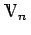
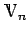
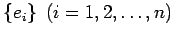
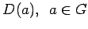
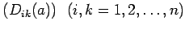
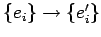
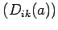

Inhalt Index DeskTop Bronstein

 Algebra und Diskrete Mathematik Klassische algebraische Strukturen Darstellung von Gruppen Definitionen
Algebra und Diskrete Mathematik Klassische algebraische Strukturen Darstellung von Gruppen Definitionen


Eine Darstellung D(G) der Gruppe G ist eine Abbildung (Homomorphismus) von G auf die Gruppe nichtsingulärer linearer Transformationen D in einem n-dimensionalen (reellen oder komplexen) Vektorraum :
Der Vektorraum  heißt Darstellungsraum; n ist die Dimension der Darstellung (s. auch Vektorräume). Nach Einführung einer Basis  in kann jeder Vektor x als Linearkombination der Basisvektoren geschrieben werden:
Die Wirkung der linearen Transformation  auf x läßt sich durch eine quadratische Matrix  definieren, die die Koordinaten des transformierten Vektors x' in der Basis ei liefert:
Diese Transformation kann auch als Basistransformation  aufgefaßt werden:
Damit wird jedem Gruppenelement a eine Darstellungsmatrix  zugeordnet:
Die Darstellungsmatrix hängt von der Wahl der Basis ab.